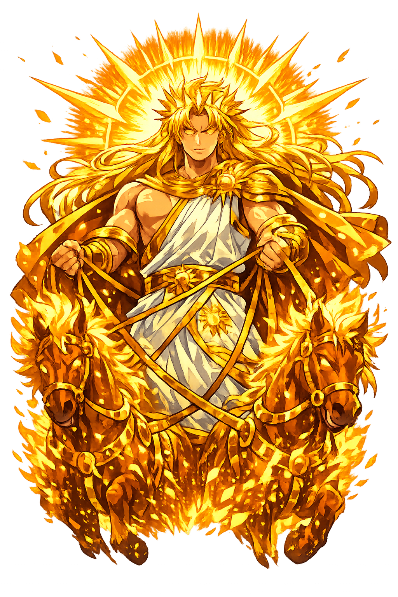

Ancient Domain
Hēlios is the sun itself: a god who sees everything and drives his blazing chariot across the sky each day. Nothing hidden escapes him, and mortals and gods alike swear oaths by his light.
Extended Lore
Etymology · Phonology · Orthography · Cultural Legacy · Primary Sources

Essential information about Hēlios, Sun, Sight, Oaths
From original script to Unicode restoration
Hēlios is Tier 2 because the Greek Ἥλιος preserves stress (acute on the first epsilon) but no long vowel. The name is built on the same root as English 'sun' and Latin 'sol,' one of the most ancient theonyms in the Indo-European family.
Character-by-character philological analysis
| Character | Unicode | Name | Block | Phonetic Role |
|---|---|---|---|---|
| H | U+0048 | Latin Capital Letter H | Basic Latin | Rough breathing |
| ē | U+0113 | Latin Small Letter E with Macron | Latin Extended-A | Eta: long epsilon |
| l | U+006C | Latin Small Letter L | Basic Latin | Lambda |
| i | U+0069 | Latin Small Letter I | Basic Latin | Short iota |
| o | U+006F | Latin Small Letter O | Basic Latin | Short omicron |
| s | U+0073 | Latin Small Letter S | Basic Latin | Sigma |
The Tier 1 classification reflects which ancient features stress, length, or script are preserved in this restoration.
From ancient cult to modern Unicode
Hēlios is the sun itself: a god who sees everything and drives his blazing chariot across the sky each day. Nothing hidden escapes him, and mortals and gods alike swear oaths by his light.
The Romans identified Hēlios with Sol, though Apollo increasingly absorbed solar attributes in both Greek and Roman religion. The emperor Aurelian made Sol Invictus the official patron of the Roman Empire in 274 CE, and the cult influenced the dating of Christmas. In Hellenistic Egypt, Hēlios was syncretized with Osiris and with the Egyptian sun god Ra as a universal deity. Neoplatonists saw Hēlios as the visible image of the One. The heliocentric model of Copernicus gave Hēlios's name a scientific afterlife: the sun, not the earth, is the center.
Hēlios is the namesake of heliocentrism, helium, and countless words for sunlight. The Colossus of Rhodes, one of the Seven Wonders of the Ancient World, was a giant statue of Hēlios. His crown of rays influenced depictions of Christ as 'Sol Invictus' and the halo in Christian art. In modern culture, the sun god remains a symbol of clarity, revelation, and dangerous power. Restoring Hēlios restores the original Greek name of the star that makes life possible.
Restoring Hēlios in a domain name is more than orthographic accuracy. It is a statement that the internet should recognize the full range of human writing — not only the ASCII keyboard.
Common questions about Hēlios, Sun, Sight, Oaths, and Unicode restoration
In reconstructed pronunciation, Hēlios is /hɛ́.li.os/ — approximately 'HAY-lee-oss' — the first syllable rises like the sun; the rest is bright and clear..
Hēlios means Sun (from ἕλος) in the greek tradition.
Hēlios is associated with Chariot (The vehicle that carries the sun across the sky), Winged sun disk (The sun as a flying radiant power), Crown of rays (The projecting beams of light), Horse (The horses of his chariot, often named Pyrois, Eous, Aethon, and Phlegon), Whip (His control over the solar horses).
Plain ASCII helios strips the stress, length, and script that make the name specific. Unicode restoration returns the name to its original written dignity.
Each dawn Hēlios rises from Oceanus in the east, drawn by four horses in a chariot of fire. At midday he sees the entire world spread below him. In the evening he sinks into the western Ocean, where he is received in a golden cup and conveyed back to the east. The Homeric Hymn to Helios (1–14) describes this journey as the source of all life and growth.
The philological foundations of this restoration
Every claim on this page is grounded in established scholarship. The orthographic restorations follow disciplinary convention. The etymological chain follows the best available reference works. This is not invention — it is resurrection through scholarship.
You have traced the name from its earliest attestation to its Unicode restoration. Now return to the myth. The story is where the name lives.
Back to Lore